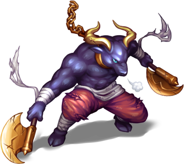

As you emerge from the depths of the Goblin's lair, victorious but
weary, you find yourself standing on the edge of an enchanted forest.
The air is thick with magic, and the trees seem to whisper secrets as
you step into their realm. But your respite is short-lived, for
lurking within the shadows of this mystical woodland lies a new
challenge: Asterron the Minotaur. With your sword at the ready and
your wits sharpened by your recent triumph, you steel yourself for the
next stage of your adventure. The path ahead is fraught with danger,
but with courage and cunning, you are determined to emerge victorious
once more.
